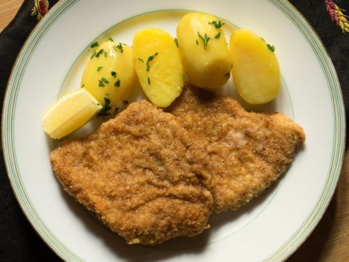
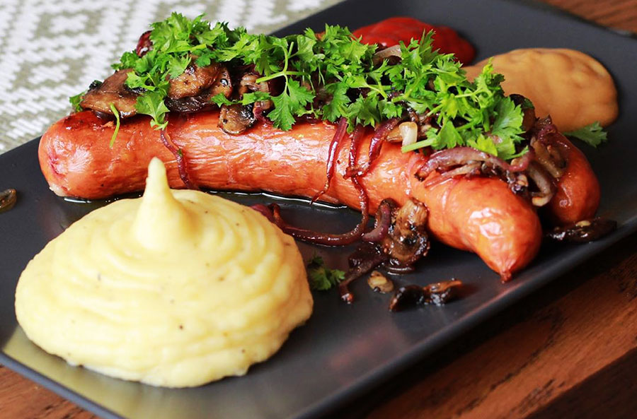
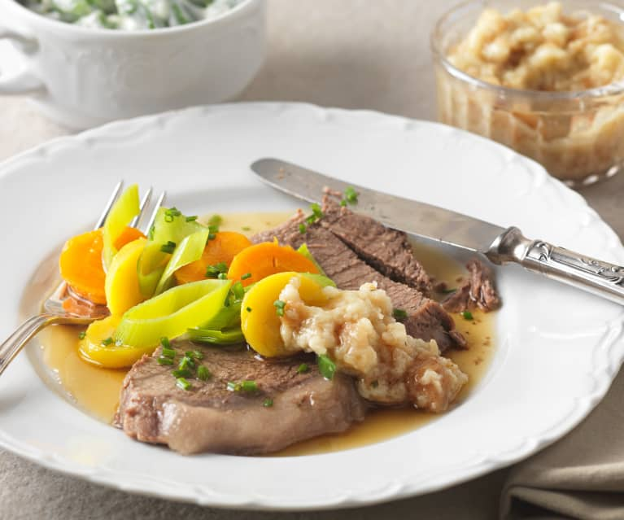
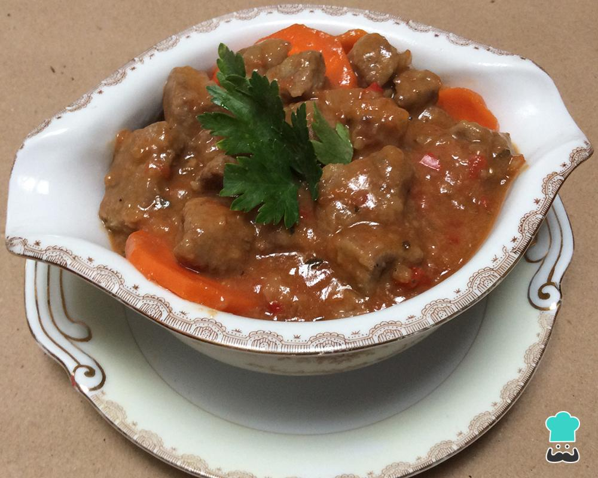
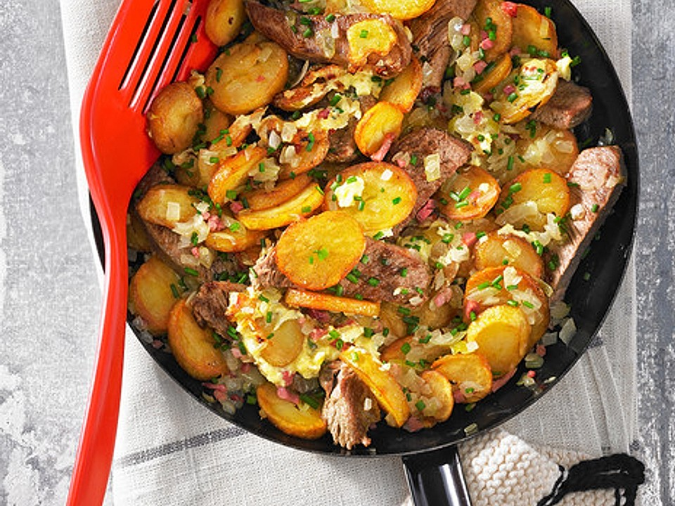

A pesar de no tener la fama de otras gastronomías, nocreas que los menús van a ser aburridos y sin gracia: si eres de buen comer,
en Austria vas a estar muy a gusto.
Es por esa razon que aqui te mostramos 5 platos que puedes degustar en este hermoso pais.
1. Wiener Schnitzel
El Wiener Schnitzel es una de las comidas mas tipicas de este hermoso pais.
La original consiste en un filete de ternera empanado y frito,
aunque también están las versiones de pollo y de cerdo, que suelen ser más baratas.
Se suele acompañar con patatas fritas o ensalada de patatas y siempre se sirve con limón,
toquecillo que a nosotros nos encanta.

2. Salchichas
Las salchichas son de gran importancia para la gastronomia de Austria,
es por eso que te presentamos los principales tipos de salchicha Austriaca
- Würstchen, también conocida como “frankfurt”, se suele preparar hervida y se sirve con pan con mostaza y kétchup.
- Bratwurst, ligeramente especiada, son las típicas salchichas alemanas y austriacas que se preparan a la parrilla.
- Käsekrainer, salchicha con queso, con un toque ahumado y se prepara también a la parrilla.

3. Tafelspitz
El Tafelspitz es otro de los platos típicos de Austria que tienes que probar sí o sí: consiste básicamente en un plato de carne de ternera en caldo y que se presenta con puré de manzana, que le un saborcito dulzón y con salsa de leche agria y cebollino. A menudo también se sirve con rábano picante encurtido.

4. Goulash
Este plato de origen húngaro nunca falta en los menús austriacos y ¡por suerte! Nos parece de lo más rico y sabroso que puedes comer en Austria, y nuestra segunda elección tras la Wiener Schnitzel. A diferencia de la receta original, en este caso no se habla de sopa, sino de un contundente guiso de carne (normalmente ternera pero también cerdo), con salsa de tomate y paprika (pimentón dulce o picante).

5. Tiroler Gröstl
Este plato se encuentra principalmente en los mercadillos navideños de Viena y lo cierto es que huele que alimenta, así que no tardarás en reconocerlo. Es un plato típico de la zona del Tirol, en el sur de Austria, y se trata de una receta a base de patatas, carne, cebolla y salchichas, cocinado a la sartén con mucha mantequilla.
